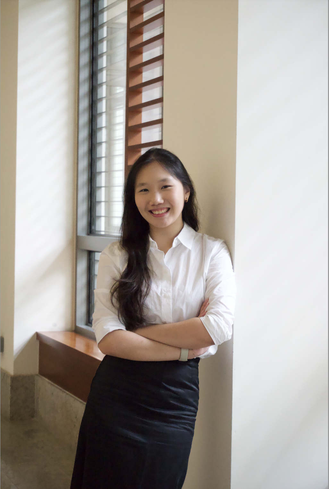
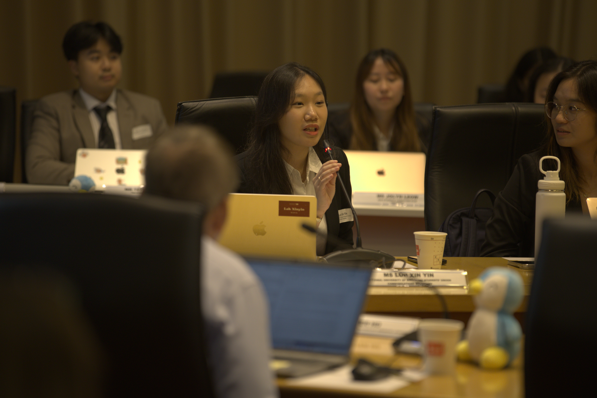
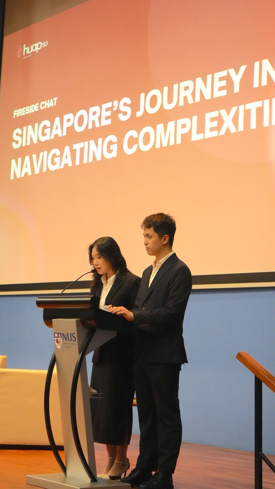
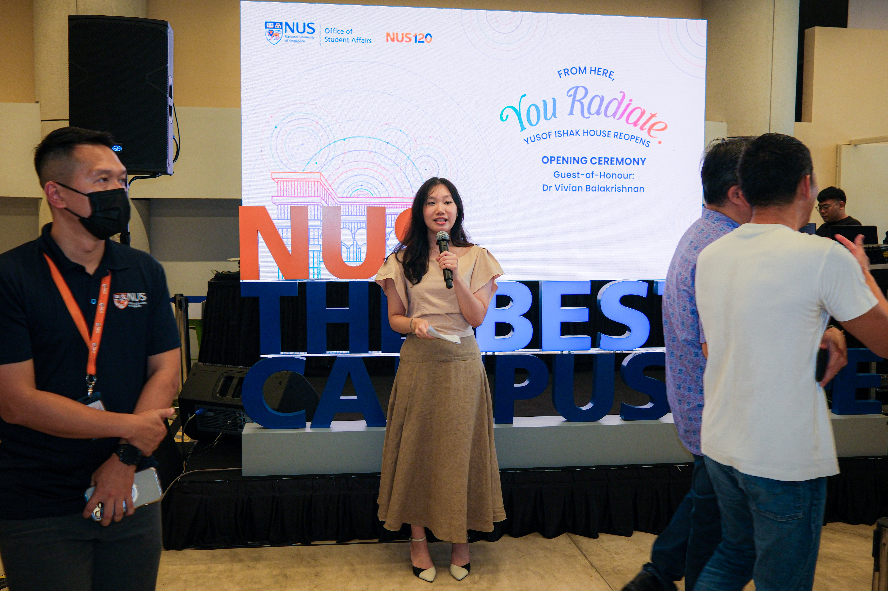
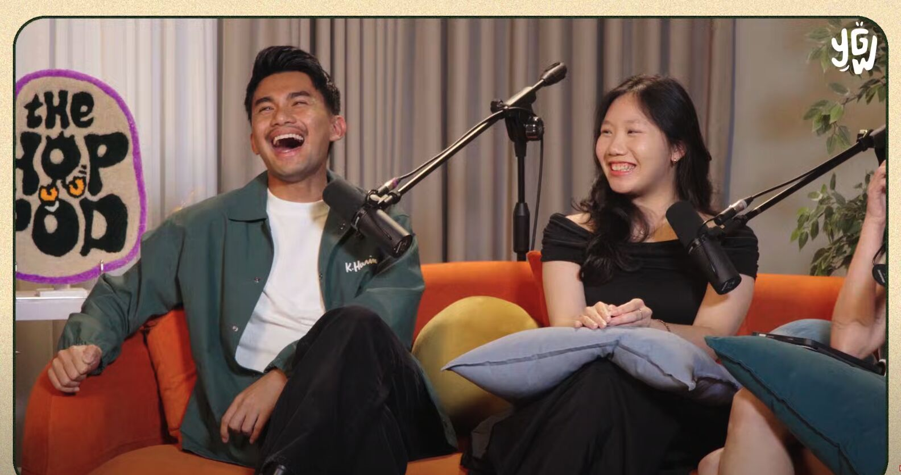

BBA Marketing (Distinction), NUS. Second Major in Communications & New Media. Comms Secretary, 46th NUSSU. Temasek Public Affairs intern.

Communications · Marketing · Public Affairs — selected work →

Final-year NUS Business (Marketing) student working across communications, programmes and stakeholder engagement. Interested in how institutions connect with the people they serve. About me →
Vice-President (Communications), Harvard Undergraduates in Asia Programme. Rebrand and outreach to a 5K audience.

NUSSU Communications: website and EDM revamp (+90% engagement), crisis communications support, and freshmen experience work with university stakeholders.

Guest on The Hop Pod, speaking on student life and communications work beyond campus.

References from NUS staff I worked with. Select to read the full letter.
“She shows up with ideas, follows through with care, and makes everyone around her better at their jobs.”
Ms Elissa Chia — Associate Director, Communications, NUS OSA · 21 Nov 2025“Through her leadership, creativity, and resilience, many joint projects achieved great success.”
Mr Lawrence Chai — Head, Digital Marketing, NUS OUC · 6 Nov 2025